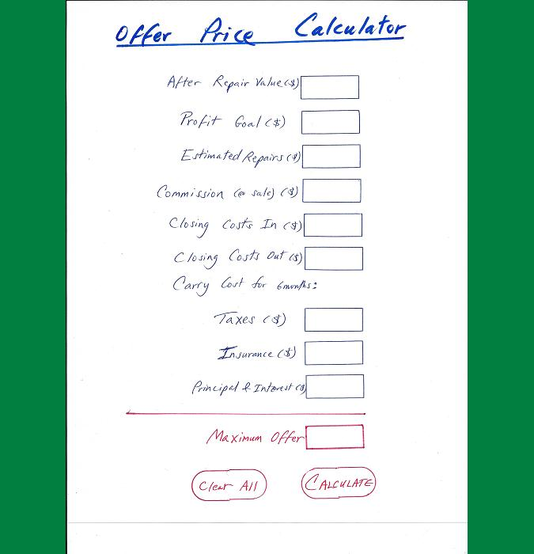

CSCI E-75 Project 3 Proposal
JavaScript/jQuery Tool
Camran Shahidi
As a casual real estate investor, I often need to make a quick decsion on how much to offer on a fixer upper house. Simple formulas such as MAO (Maximum Allowable Offer) give you a ballpark figure on an investment property. But the resulting figure is not precise and in my experience, gives you too low an offer price in a hot market such as Boston.
This application will calculate the maximum offer a real estate investor must submit on a fixer upper house. The idea is that the investor will purchase, repair and then resell. The calculator bases its decision on criteria such as what the house will sell for after repairs, the projected profit the investor envisions, and various estimated expenses incurred before the house is re-sold. A web-based tool, it will be easier than Excel to use on a smartphone while you are on the go.
